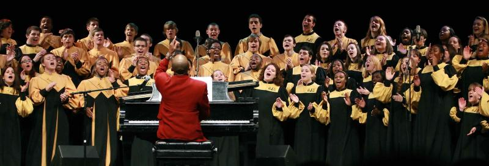

New to St. Mary of the Lake, Register Here.
The Hagerty Center, which was originally constructed to serve as a convent and presently houses the volunteers of Amate House, now functions most notably as the site for the St. Mary of the Lake Food Pantry, operated by the St. Mary of the Lake conference of the St. Vincent de Paul Society in partnership with our sharing parish, Immaculate Conception ( on Talcott Avenue)
Bulletin
In 1901, Buena Park was sparsely populated and the lakeshore reached as far west as Sheridan Road. There were only sixty families identified as Catholics who attended church when Father John J. Dennison was appointed to organize the parish.
Groups
The Roman Catholic Parish of St. Mary of the Lake Church, by the grace of God, provides for the spiritual and human needs of the parish family and community; fosters unity and camaraderie by incorporating the rich diversity of cultures...
Donations
A dedicated team of priests, deacons, and laypeople keep the church and school running smoothly.
St. Vincent de Paul Hagerty Food Pantry
The Hagerty Center, which was originally constructed to serve as a convent and presently houses the volunteers of Amate House, now functions most notably as the site for the St. Mary of the Lake Food Pantry, operated by the St. Mary of the Lake conference of the St. Vincent de Paul Society in partnership with our sharing parish, Immaculate Conception ( on Talcott Avenue)